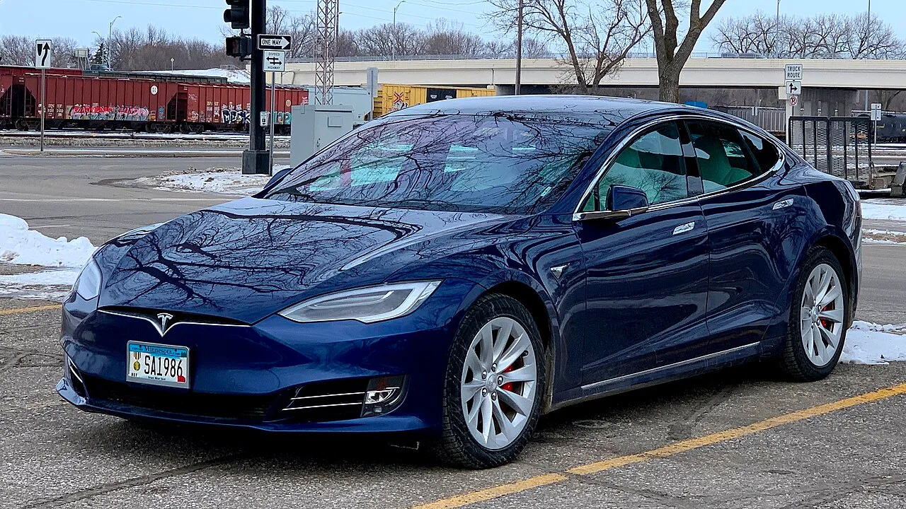

▲ 이번 리콜 대상 중 가장 많은 195만대를 차지한 모델Y. 중국산 모델Y와 모델3가 리콜 물량의 대부분을 차지한다
1. 297만 5,910대, 사실상 판매 전량이 리콜 대상
테슬라가 중국 시장에서 판매한 차량 약 298만대(정확히는 297만 5,910대)를 오는 9월 25일부터 리콜한다고 밝혔다. 리콜 대상은 중국에서 생산된 모델3와 모델Y를 중심으로, 수입된 모델3·모델S·모델X까지 포함한 사실상 전 라인업이다. 2020년 이후 테슬라가 중국에서 판매해 온 물량과 맞먹는 규모로, 단일 업체의 리콜로는 중국 자동차 시장 역대 최대 수준이다.
| 모델 | 대수 |
|---|---|
| 국산 모델Y | 195만 6,713대 |
| 국산 모델3 | 97만 3,156대 |
| 수입 모델3 | 3만 5,590대 |
| 모델X | 8,328대 |
| 모델S | 2,123대 |
| 합계 | 297만 5,910대 |

▲ 모델3 실내. 비상용 기계식 문손잡이는 도어 트림 하단에 숨겨져 있어 평소에는 눈에 잘 띄지 않는 구조다 ⓒ Wikimedia Commons
2. 결함의 핵심 — "찾기도 어렵고, 쓸 수도 없다"
이번 리콜의 원인은 차량 내부에 마련된 비상용 기계식 문손잡이가 주변 내장재와 색상·질감이 비슷해 탑승자가 위급 상황에서 이를 빠르게 식별하고 조작하기 어렵다는 점이다. 테슬라를 포함한 최근 전기차들은 실내를 매끈하게 꾸미기 위해 비상 손잡이를 도어 하단이나 수납공간 안쪽에 숨겨두는 경우가 많은데, 평소 사용할 일이 없다 보니 탑승자가 위치 자체를 모르는 경우도 적지 않다.
더 큰 문제는 여기서 그치지 않는다. 심각한 충돌로 차량의 저전압 배터리 시스템이 작동을 멈추면, 평소 쓰던 전동식 문 개폐 버튼 기능이 통째로 무력화된다. 이 상태에서 기계식 비상 손잡이마저 찾지 못하면, 탑승자 스스로 탈출하는 것은 물론 외부 구조대가 문을 여는 것도 지연될 수밖에 없다.
📍 저전압 시스템과 전동식 도어의 관계
전기차의 주행용 고전압 배터리와 별도로, 차량 전장 부품을 구동하는 작은 저전압(12V 안팎) 배터리가 따로 탑재된다. 도어 잠금 해제·개폐 버튼처럼 일상적으로 쓰는 전동식 기능 대부분이 이 저전압 시스템에 의존하는데, 충돌 충격으로 저전압 배선이 끊기거나 시스템이 다운되면 평소 쓰던 버튼식 도어 개폐 기능은 그대로 먹통이 된다. 이 때문에 완전히 별도 경로로 작동하는 기계식 비상 손잡이의 존재와 위치가 중요해진다.
3. 테슬라의 해결책 — 경고 표시와 OTA 업데이트
테슬라는 이번 리콜에서 부품 교체 없이 두 가지 조치로 대응한다. 우선 비상 손잡이 위치를 명확히 알리는 경고 표시(라벨)를 무료로 부착한다. 이와 함께 무선 소프트웨어 업데이트(OTA)를 통해, 심각한 충돌이 감지되면 창문이 자동으로 내려가도록 하는 기능을 추가한다는 계획이다. 창문을 통한 탈출·구조 경로를 넓혀 기계식 손잡이를 찾지 못하는 상황의 위험을 낮추겠다는 취지다.

▲ 이번 리콜에는 물량은 적지만 모델S와 모델X도 포함됐다. 두 모델을 합쳐 1만 451대가 대상이다 ⓒ Greg Gjerdingen, Wikimedia Commons(CC BY 2.0)
4. 규제 배경 — 중국 당국, 손잡이 안전기준 정조준
이번 리콜은 중국 당국이 전자식·매립형 문손잡이의 안전 규제를 전반적으로 강화하는 흐름 속에서 나왔다. 테슬라 단독으로 그치지 않고, 같은 시기 중국에서는 총 9개 자동차 업체의 차량 약 430만대가 함께 리콜 대상에 올랐다. 그중 테슬라의 298만대가 가장 큰 비중을 차지했으며, 나머지는 샤오미·립모터·샤오펑 등 중국 전기차 업체들이다. 업계 전반의 리콜로 확산된 배경과 향후 규제 방향은 관련 후속 기사에서 별도로 다룬다.

▲ 모델Y 후측면. 중국산 모델Y 195만 6,713대가 이번 리콜의 3분의 2 가량을 차지한다 ⓒ Wikimedia Commons

▲ 2023년 출시된 페이스리프트 모델3 '하이랜드'. 중국에서 생산되는 최신 모델3도 이번 리콜 대상에서 예외가 아니다 ⓒ Wikimedia Commons
5. 소비자가 지금 확인해야 할 것
이번 리콜은 부품을 새로 갈아 끼우는 방식이 아니라 라벨 부착과 소프트웨어 업데이트로 진행되는 만큼, 차주 입장에서 큰 불편 없이 조치를 받을 수 있다는 것이 테슬라 측 설명이다. 다만 그 사이 비상 상황이 발생할 경우를 대비해, 차주들은 지금 당장이라도 자신의 차량에서 기계식 비상 손잡이의 정확한 위치를 확인해 두는 것이 안전하다. 리콜 대상 여부와 일정은 테슬라 중국 공식 채널을 통해 순차 공지될 예정이다. 바로가기

▲ 매끈한 실내를 강조하는 최근 테슬라 차량 인테리어. 비상용 기계식 손잡이는 이런 구조 속에서 더 찾기 어려워진다 ⓒ Wikimedia Commons
✅ 테슬라 중국 298만대 리콜, 이것만은 확인하세요
· 9월 25일부터 모델3·모델Y·모델S·모델X 297만 5,910대 리콜
· 원인은 비상용 기계식 문손잡이 식별 어려움 + 충돌 시 전동식 도어 기능 정지
· 무료 경고 라벨 부착, OTA로 충돌 후 창문 자동 하강 기능 추가
· 같은 시기 중국 9개 업체 약 430만대 동반 리콜, 테슬라가 최대 비중
· 부품 교체 없이 소프트웨어·라벨 조치로 진행
6. 정리
테슬라의 이번 298만대 리콜은 중국에서 판매된 차량 사실상 전량을 대상으로 한다는 점에서 이례적이다. 평소 쓸 일 없는 비상 손잡이가 정작 필요한 순간 식별도 조작도 어렵다는 구조적 결함이 드러났고, 여기에 충돌 시 전동식 도어 기능까지 함께 멈추는 문제가 겹치면서 규제당국이 움직였다. 테슬라는 라벨 부착과 OTA 업데이트로 대응하지만, 이번 리콜이 같은 시기 중국에서 진행 중인 9개 업체 430만대 규모의 업계 전반 리콜과 맞물려 있다는 점에서 파장은 한 회사에 그치지 않을 전망이다.